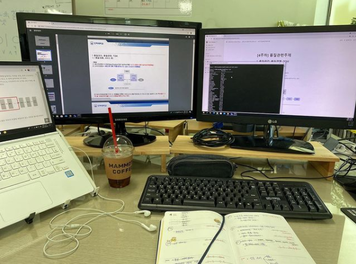
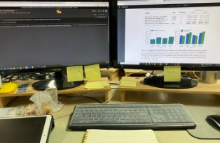
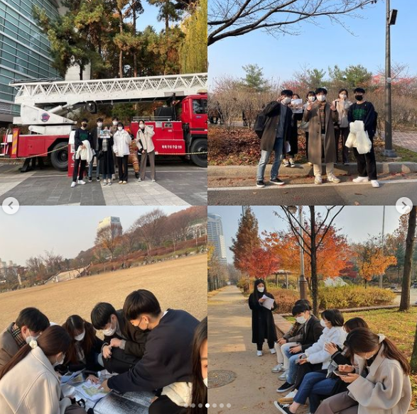
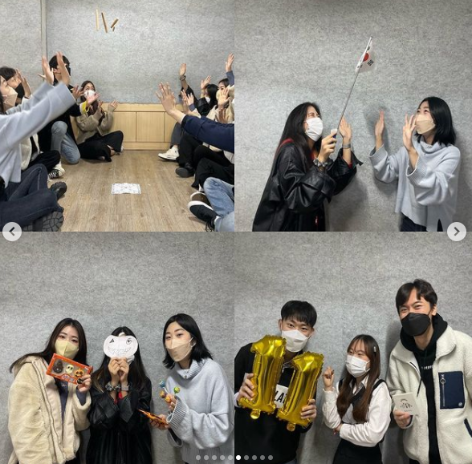
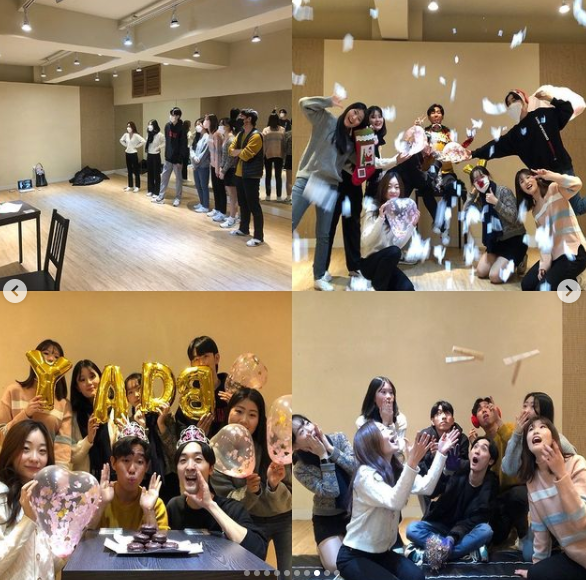
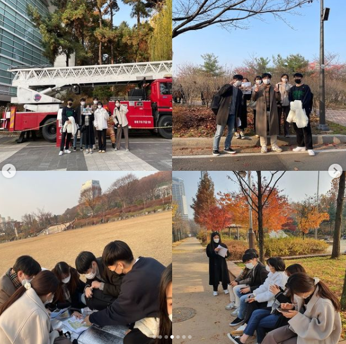
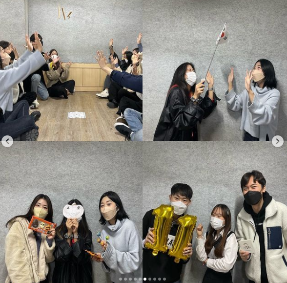
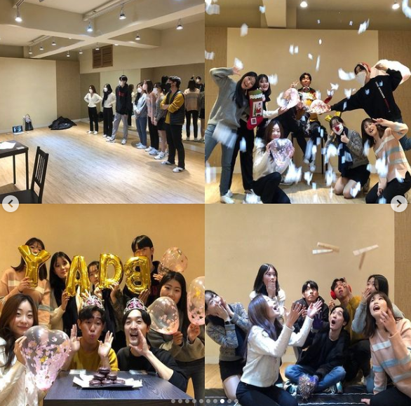
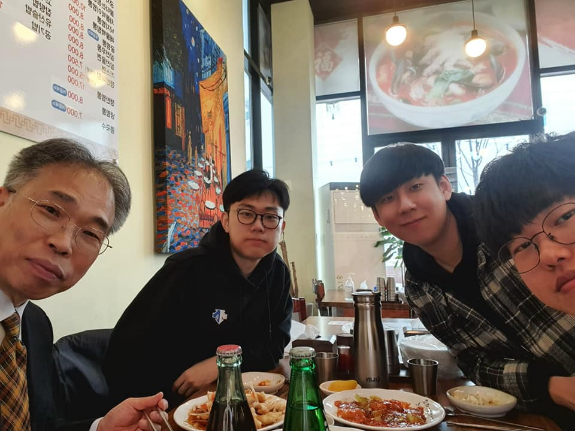
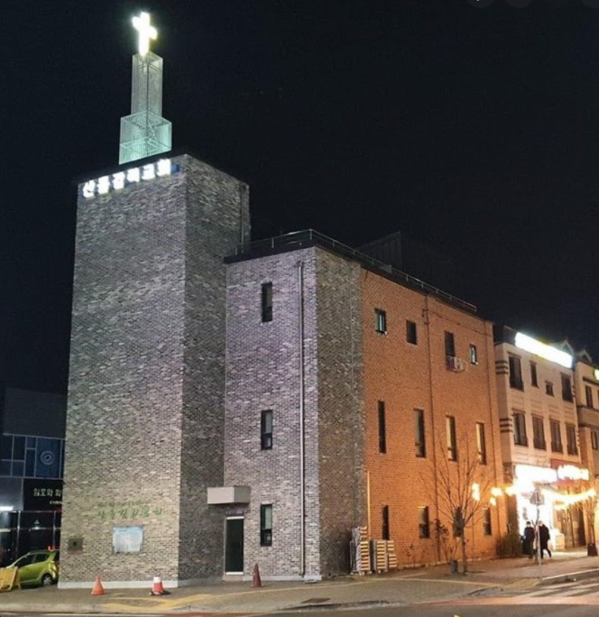

제가 첫 번째로 좋아하는 것은 바로 사람들과의 교류입니다.
학창 시절의 배기웅
과거의 저는 여유가 없었고, 꽤나 감정적이었으며, 불안한 학창시절을 살았습니다. 이러한 저의 모습에는 여러 이유들이 있겠지만 좋은 대학에 가야한다는 강박감이 제일 컸던 것 같습니다. 고등학교 3년 동안 공부를 하면서 그 과정을 즐기기 보다는 하루하루를 불안해하고 매일매일 저 자신을 채찍질 하면서 학창시절을 보냈습니다. 이러한 저의 모습은 대학교를 와서도 바뀌지 않았습니다.
2019년, 반수를 하게 되다.
입시 과정에서 아쉬움이 있었고, 대학 입학하기 전부터 반수를 하기로 다짐했습니다. "어차피 나는 다른 대학교에 갈건데 뭘"이라는 생각이 새내기 생활 동안 가득찼었기 때문에, 학과 행사라던가 학점, 인간관계에도 신경쓰지 않고 매일 기숙사에 쳐박혀서 재미없는 대학생활을 했었습니다. 그렇게 2019년 상반기를 보내고, 2019년 하반기 때 재수학원에 들어가 수능공부를 시작하였습니다. 하지만 생각만큼 점수가 잘 나오지 않았고, 결국 다시 인하대학교로 돌아오게 되었습니다. 수능을 망치고 돌아와보니 남은 것이 없었습니다. 이를 계기로 제가 허송세월로 보낸 그 한 학기가 얼마나 소중했는지를 깨달을 수 있었으며, 안일한 생각으로 보냈던 시절들을 후회하게 되었습니다.
보다 가치있는 삶을 살기 위해,
현재 저의 좌우명은 "더도말고 덜도말고 딱 5년 뒤의 내가 지금의 나를 바라보았을 때 후회하지 않는 삶을 살자"입니다. 후회하지 않기 위해 5년 뒤에 배울 것을 지금 배우고, 3년 뒤에 겪을 것을 지금 겪어서 현재 저의 소중한 시간들을 가치있게 보내고 싶습니다.
많은 것들을 배우고 하루빨리 겪기 위해선 최대한 많은 사람들을 만나야 한다고 생각합니다. 다양한 사람들을 만나고, 겪고, 알아가는 과정을 통해 제가 살아왔던 세상이 아닌 다른 세상들을 경험함으로써 '이때 이런 것들을 알았으면 좋았을텐데...'하는 후회를 막고 싶습니다. 우물 안의 개구리가 되어 현실에 안주하는 것이 아니라 더 넓은 세상을 향해 도약하는 학생이 되고 싶습니다. 그러기 위해 저는 오늘도 다른 사람들이 살고 있는 세상을 만나기 위해 노력 중입니다.
1. 가족
가족은 저의 소중한 동반자입니다. 아빠, 엄마, 저, 그리고 여동생으로 구성되어 있습니다.
가족은 제가 지식 뿐만 아니라 전반적인 삶의 지혜 를 얻고 배울 수 있는 곳입니다. 제 인생에서 가장 중심이 되는 곳이자 제가 심리적으로 많은 안정을 얻는 공동체입니다. 당연한 말이지만, 제 인생에서 가장 많이 영향을 받고, 또 가장 많이 성장할 수 있도록 해주었습니다.
2. 정보공학연구실
 정보공학연구실은 제가 학문적인 측면 에서 배울 수 있는 세상입니다. 2021년 4월부터 지금까지 인하대학교 정보공학연구실에서 학부연구생으로 연구하고 있습니다. 관심사는 인공지능이며, Computer Vision뿐만 아니라 NLP 분야 등 다양한 분야들에 대해서 배우고 알아가고 있습니다. 현재는 Trajectory Classification이라는 주제로 논문을 작성하고 있습니다. 제가 가장 좋아하는 분야인 IT를 배우는 곳인 만큼, 정말 많이 얻어가고 있습니다.
3. 드림스타트 연합동아리
 





드림스타트 연합동아리는 제가 인간관계 측면 에서 많이 배우는 터전입니다. 2021년 3월부터 지금까지 활동하고 있습니다.
사실 드림스타트 동아리를 하기 전에는 많은 사람들과 교류할 기회가 없었습니다. 하지만 이 동아리를 하게 되면서 정말 다양한 친구들을 만날 수 있었고, 그 과정에서 정말 귀중하고 값진 교훈들을 얻을 수 있었습니다.
먼저 배려를 얻을 수 있었습니다. 사실 전에는 다른사람의 입장에서 생각해본 적이 별로 없었던 것 같습니다. 너무나 이기적이었고, 저라는 틀 안에 갇혀 살았었습니다. 하지만 동아리 내 활동들을 하면서 정말 성숙하고 배려심이 깊은 사람들을 만나면서 인간관계에서 가장 근간이 되는 것이 상대방에 대한 배려라는 것을 알았습니다.
두 번째로 저의 생각을 잘 표현할 수 있게 되었습니다. 사람들을 만나면서 저의 의견이나 감정들을 올바른 방식으로 표현하는 것은 너무나 중요합니다. 이전에는 '누군가는 내 심정을 알아주겠지' 혹은 '말하기 귀찮아'라는 생각을 가졌지만, 이 동아리를 통해 표현하는 것의 중요성을 배울 수 있었습니다.
마지막으로 잘 듣는 연습을 할 수 있었습니다. 예전에는 저 잘난맛에 저의 대해 말하는 것을 즐겨했다면, 이제는 다른사람의 말에 귀기울이는 훈련을 할 수 있게 되었습니다. 그리고 잘 들어주고 그 사람 말의 경청을 해주는 것만으로도 큰 도움이 된다는 것 또한 배울 수 있게 되었습니다.
4. 교회 친구들
 저는 태어날 때부터 기독교를 믿은 모태신앙입니다. 대학교에 입학하고(2019) 지금까지 다니고 있는 동탄산돌감리교회는 제가 신앙적으로 배우는 곳 입니다. 산돌교회는 교회가 워낙 작기 때문에 청년들의 도움이 매우 중요합니다. 저는 이 교회의 청년부 회장으로서 청년부를 이끌어가는 역할을 하고 있습니다. 또한 코로나로 대면예배가 불가능해지면서 방송으로 예배를 하곤 했는데, 그 방송하는 역할을 제가 맡아 하고 있습니다. 그 과정에서 목사님의 설교말씀을 보다 효과적으로 전달하기 위해 설교 원고를 요약해 매주 ppt로 만들고 있습니다. 이 과정에서 저는 신앙적으로 성장할 수 있게 되었습니다.